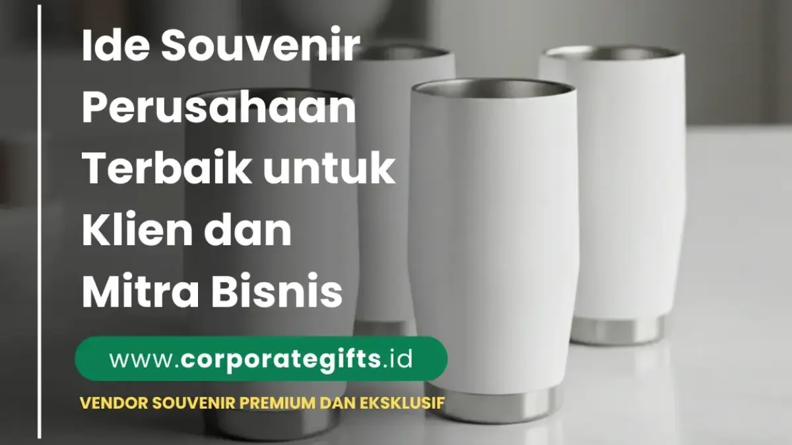

Corporate Gifts ID - Dalam dinamika pasar profesional yang sangat kompetitif, merawat ikatan kemitraan dengan klien dan rekanan bisnis membutuhkan pendekatan yang lebih mendalam daripada sekadar pertukaran email rutin atau rapat formal. Salah satu metode paling efektif untuk membangun loyalitas jangka panjang adalah melalui pemberian cenderamata korporat yang bernilai guna tinggi dan dikemas secara elegan.
Souvenir perusahaan terbaik untuk klien dan mitra bisnis adalah produk berkualitas prima yang mendukung produktivitas kerja harian serta dipersonalisasi secara halus dengan logo atau monogram nama penerima. Pilihan utama yang paling banyak diandalkan mencakup gift set eksekutif, plakat kristal optik, organizer notebook kulit premium, tumbler vacuum stainless SUS304, smart gadget nirkabel, hingga cenderamata ramah lingkungan bersertifikasi. Souvenir yang dirancang dengan matang bukan lagi sekadar pemborosan anggaran, melainkan simbol penghormatan dan investasi relasional yang membuahkan loyalitas bisnis kokoh.
Poin Kunci Souvenir Kemitraan Bisnis:
- Emotional Equity: Hadiah berkelas membangun modal emosional yang membedakan perusahaan Anda dari kompetitor, mengubah relasi transaksional menjadi kolaborasi strategis.
- Subtle Branding: Personalisasi minimalis seperti grafir laser halus atau deboss tanpa tinta menjaga estetika hadiah agar nyaman digunakan sehari-hari oleh jajaran direksi.
- Kepatuhan Regulasi (Compliance): Memastikan nilai hadiah tetap proporsional dan transparan sesuai ketentuan gratifikasi instansi BUMN maupun lembaga kepemerintahan.
- Fokus pada Kualitas Material: Mengedepankan durabilitas jangka panjang dibanding kuantitas produk, mencerminkan komitmen keunggulan standar mutu institusi Anda.
Mengapa Souvenir Perusahaan Penting untuk Hubungan Bisnis?
Pemberian cenderamata korporat kepada rekanan eksternal memiliki signifikansi psikologis dan strategis yang kuat dalam etika bisnis modern:
1. Menciptakan Kesan Profesional dan Berkelas
Perhatian terhadap detail fisik mencerminkan etos kerja sebuah organisasi. Memilih souvenir custom VIP berupa set kulit asli, pen set berbahan kuningan, atau trofi kristal menunjukkan bahwa perusahaan Anda menjunjung tinggi standar kualitas tanpa kompromi.
2. Merawat Retensi dan Loyalitas Jangka Panjang
Saat klien merasa dihargai di luar konteks kontrak formal, rasa percaya (trust) akan tumbuh berlipat ganda. Hadiah personal pada momen penting seperti perayaan ulang tahun kerja sama atau keberhasilan tender proyek menciptakan ikatan yang membuat mitra enggan beralih ke vendor lain.
3. Media Pengingat Merek (Brand Recall) Tanpa Terkesan Agresif
Berbeda dengan iklan digital yang cepat terlupakan, barang cenderamata fungsional yang berada di atas meja kerja klien akan terus memancarkan kehadiran brand Anda secara positif dan berwibawa setiap hari kerja.
Rekomendasi Souvenir Perusahaan untuk Klien dan Mitra Bisnis
Berdasarkan tren pengadaan korporat modern di CorporateGifts.ID, berikut kurasi produk cenderamata kemitraan yang paling diapresiasi oleh jajaran eksekutif:
1. Gift Set Eksklusif Custom
Kombinasi harmonis antara buku agenda kulit bersampul deboss, pena metal ballpoint berukir nama, dan tumbler termos stainless steel tahan panas 24 jam dalam kotak rigid box berpita satin merupakan pilihan klasik yang tidak pernah gagal memberikan impresi prestisius.
2. Plakat dan Trofi Kristal Optik
Plakat kristal dengan potongan presisi tinggi (diamond-cut) dan grafir 3D internal merupakan wujud penghargaan permanen yang sangat layak dipajang di lemari pajangan ruang kerja direksi atau lobi kantor mitra.
3. Souvenir Kategori VVIP
Untuk jajaran komisaris, direktur utama, atau tamu kehormatan kenegaraan, berikan produk bernilai seni dan fungsionalitas tinggi seperti:
- Jam meja analog berbingkai logam mulia atau kayu jati perhutani berukir halus.
- Powerbank berbalut kulit asli dengan wireless charging pad terintegrasi.
- Miniatur patung tembaga atau perak yang melambangkan filosofi sinergi dan pertumbuhan bersama.
4. Merchandise Ramah Lingkungan (Sustainable Gifts)
Perusahaan dengan komitmen prinsip ESG (Environmental, Social, and Governance) kini memprioritaskan souvenir berbahan bambu terbarukan, tumbler insulated bebas BPA, serta notebook dari kertas daur ulang bersertifikasi FSC yang mencerminkan tanggung jawab sosial ekologis.
5. Smart Gadget & Aksesori Teknologi Meja Kerja
Perangkat elektronik modern seperti flashdisk kartu berkecepatan tinggi, wireless charging stand multi-device, speaker meja Bluetooth berdesain minimalis, hingga smart desk lamp menjadi favorit profesional muda yang mengutamakan efisiensi kerja.

Pilihan drinkware tumbler keramik dan stainless steel premium dengan finishing doff minimalis untuk cenderamata bisnis eksekutif.
Matriks Perbandingan Kategori Souvenir Klien B2B
Gunakan matriks perbandingan berikut untuk menentukan opsi cenderamata yang paling selaras dengan segmentasi jabatan penerima, momen acara, dan alokasi bujet perusahaan:
| Kategori Souvenir | Karakter Produk | Target Penerima | Momen Ideal Pemberian | Kisaran Anggaran |
|---|---|---|---|---|
| Executive Gift Set | Multi-item terpadu, kemasan hardbox mewah, fungsional | Manajer Senior, Rekanan Bisnis Utama | Penutupan Kontrak, Akhir Tahun, Pisah Sambut | Rp150.000 - Rp450.000 |
| Plakat Kristal Optik | Abadi, elegan, nilai simbolik tinggi, gravir 3D | Direksi, Pejabat BUMN, Tokoh Kunci | Signing Ceremony, Perayaan Milestone, Penghargaan | Rp250.000 - Rp750.000 |
| Smart Tech Gadgets | Modern, mempermudah mobilitas kerja, bernilai guna tinggi | Klien Korporat Muda, Vendor IT & Startup | Peluncuran Produk, Kick-off Kolaborasi Digital | Rp120.000 - Rp350.000 |
| Eco-Friendly Luxury | Kayu jati/bambu, ramah lingkungan, etis, estetika alami | Klien Industri Berkelanjutan, Lembaga Non-Profit | Seminar ESG, Hari Lingkungan Hidup, CSR Gathering | Rp90.000 - Rp250.000 |
| Artisan Desk Decor | Personal, bernilai estetika seni, hiasan meja eksklusif | Klien VVIP, Komisaris, Tamu Kehormatan | Anniversary Perusahaan, Purna Tugas Direktur | Rp300.000 - Rp1.200.000 |
Tips Memilih Souvenir Perusahaan yang Tepat Sasaran
Agar investasi cenderamata Anda memberikan dampak relasional yang maksimal tanpa menimbulkan hambatan birokrasi, terapkan lima panduan strategis berikut:
- Kenali Kultur Industri Penerima: Klien di sektor perbankan, konsultan hukum, dan asuransi umumnya lebih mengapresiasi cenderamata klasik bernuansa formal seperti set pena metal atau organizer kulit. Sebaliknya, mitra di agensi kreatif dan perusahaan teknologi lebih menyukai gadget fungsional atau produk ramah lingkungan berdesain minimalis.
- Prioritaskan Kualitas di Atas Kuantitas: Mengirimkan 50 cenderamata premium berdaya tahan tinggi jauh lebih efektif dalam mendongkrak reputasi brand dibanding membagikan ratusan barang murah yang rentan rusak.
- Sisipkan Sentuhan Personalisasi Individual: Menambahkan ukiran inisial nama penerima pada permukaan notebook atau gantungan kunci kulit memberikan kesan eksklusif bahwa hadiah tersebut disiapkan secara khusus dengan perhatian tulus.
- Kesesuaian dengan Momen Penyerahan: Pastikan cenderamata selaras dengan konteks acara. Pilihlah plakat resmi untuk seremoni penandatanganan kerja sama, atau gift set relaksasi teh/kopi premium untuk momen menyambut liburan akhir tahun.
- Pahami Aturan Gratifikasi Klien BUMN dan Instansi Pemerintah: Selalu periksa kode etik kepatuhan (compliance policy) mitra Anda. Pastikan nilai barang cenderamata masuk dalam batas wajar suvenir kedinasan resmi agar tidak melanggar ketentuan anti-gratifikasi instansi terkait.
Souvenir Eksklusif sebagai Alat Branding dan Apresiasi Halus
Keberhasilan cenderamata korporat terletak pada kemampuannya menyampaikan pesan branding tanpa terasa seperti media promosi yang mencolok. Ketika sebuah tumbler premium berlogo laser engraving halus atau notebook kulit ber-deboss rapi diletakkan di ruang kerja mitra, produk tersebut secara konsisten mengomunikasikan prestise dan reputasi unggul brand Anda kepada siapa pun yang bertamu ke kantor mereka.
Inspirasi Souvenir untuk Hubungan Bisnis Jangka Panjang
Bagi kemitraan yang telah terjalin bertahun-tahun, program pemberian cenderamata dapat diklasifikasikan ke dalam skenario berikut:
- Apresiasi Tahunan Kemitraan (Annual Partner Gift): Kalender meja kayu eksklusif, agenda kulit tahunan, atau hamper gourmet akhir tahun yang diantar langsung ke pimpinan mitra.
- Souvenir Peringatan Kerja Sama Kolaboratif: Menghadirkan cenderamata berlogo ganda (dual branding) untuk mendokumentasikan keberhasilan peluncuran produk bersama atau sinergi strategis lintas korporasi.
- Cenderamata Pisah Sambut Eksekutif: Memberikan plakat kenang-kenangan dan pen set mewah saat terjadi rotasi pejabat pimpinan atau pergantian tim penanggung jawab kemitraan.
Kelebihan Souvenir Eksklusif Dibanding Souvenir Konvensional
- Masa Pakai Lebih Panjang: Material bermutu tinggi menjamin barang tetap fungsional selama bertahun-tahun tanpa penurunan kualitas tampilan.
- Meningkatkan Valuasi Citra Korporat: Memberikan impresi bahwa perusahaan Anda stabil, kredibel, dan menghargai standar estetika tinggi.
- Fleksibilitas Desain Personalisasi: Mudah disesuaikan dengan pedoman warna korporat (Pantone) serta ukiran nama penerima secara spesifik.
- Menghadirkan Hubungan yang Lebih Hangat: Menghapus batasan kaku formalitas bisnis melalui cenderamata yang menyentuh apresiasi personal.
Kesimpulan
Menyiapkan souvenir perusahaan untuk klien dan mitra bisnis bukan sekadar membagikan bingkisan, melainkan strategi komunikasi korporat tingkat tinggi untuk menancapkan reputasi profesional yang langgeng. Dengan memilih produk yang tepat, memperhatikan etika kepatuhan regulasi, serta membungkusnya dalam kemasan yang representatif, kemitraan bisnis Anda akan terbangun di atas fondasi kepercayaan yang kokoh dan berkelanjutan.
Konsultasikan rancangan paket cenderamata kemitraan dan corporate gift set perusahaan Anda bersama tim spesialis CorporateGifts.ID untuk memperoleh katalog pilihan terlengkap, layanan sampel mockup digital gratis, dan kepastian standar pengerjaan tepat waktu.